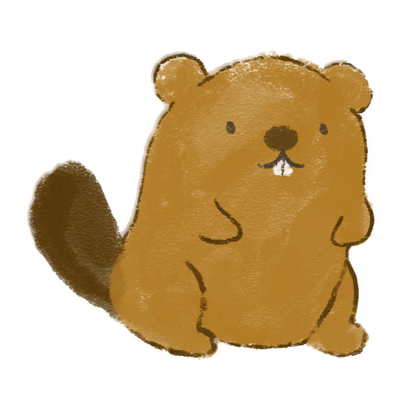

Diques Problemáticos


¡Hola! Pasa el cursor sobre mí.
¡Hola! Pasa el cursor sobre mí.
Mi nombre científico es castor canadensis, ¡Mi lugar de origen es el norte de Estados Unidos!

Puedo llegar a medir unos 70-80 centímetros de largo y pesar hasta 32 kilogramos aproximadamente
Mi trabajo es ser un ingeniero de ecosistemas, a través de la construcción de diques, puedo cambiar los cursos de agua creando un nuevo habitat para diversas especies.
En 1946, 20 parejas de castores fueron introducidas en el Lago Fagnano ubicado en la Patagonia Argentina, con el fin de favorecer la industria peletera (pieles).
En la década de 1960, los castores llegaron por primera vez a territorio chileno extendiéndose por Tierra del Fuego y multiplicando su población.
Alrededor de 1990, cruzaron el Estrecho de Magallanes para alcanzar la Península Brunswick, para aquel entonces la población de castores en Chile bordeaba los 90 mil.

Por ende, alrededor de 23 mil hectáreas de bosque nativo han sido invadidas por el castor en Chile..
Esto equivale a 38 mil Estadios Nacionales

La crisis medioambiental es tan grande, que en 1998 el gobierno autorizó la caza de castores y hasta ahora es la medida más utilizada para controlarnos.
Si bien he causado mucho daño, nunca olvides que el ser humano me trajo aquí primero y ahora vive las consecuencias. Por mis amigos y los ecosistemas de nuestro planeta te pido que digas ¡NO A LA INTRODUCCIÓN DE ESPECIES!.